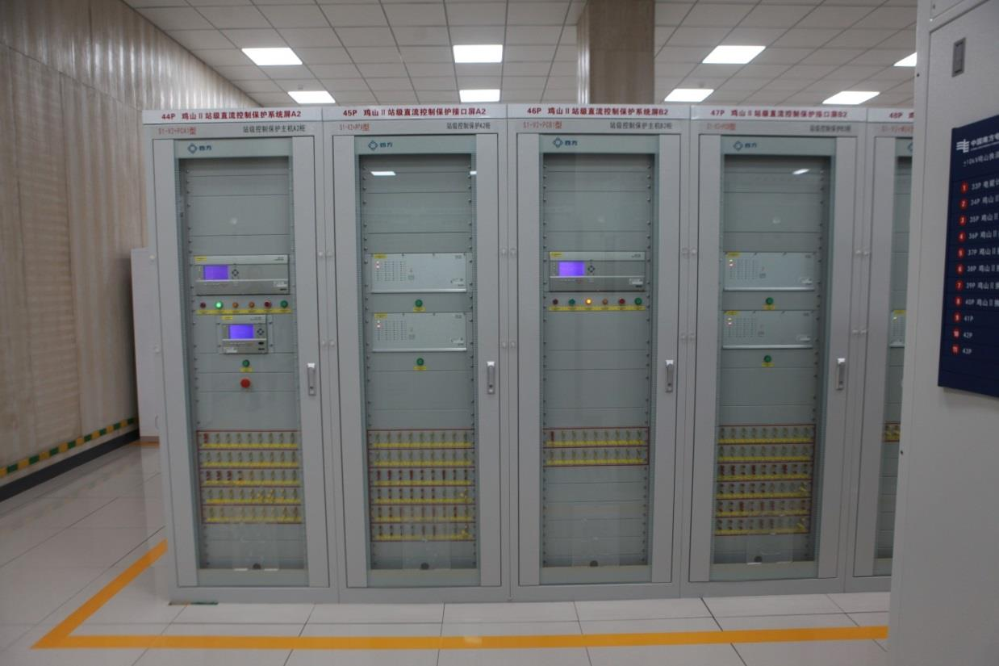
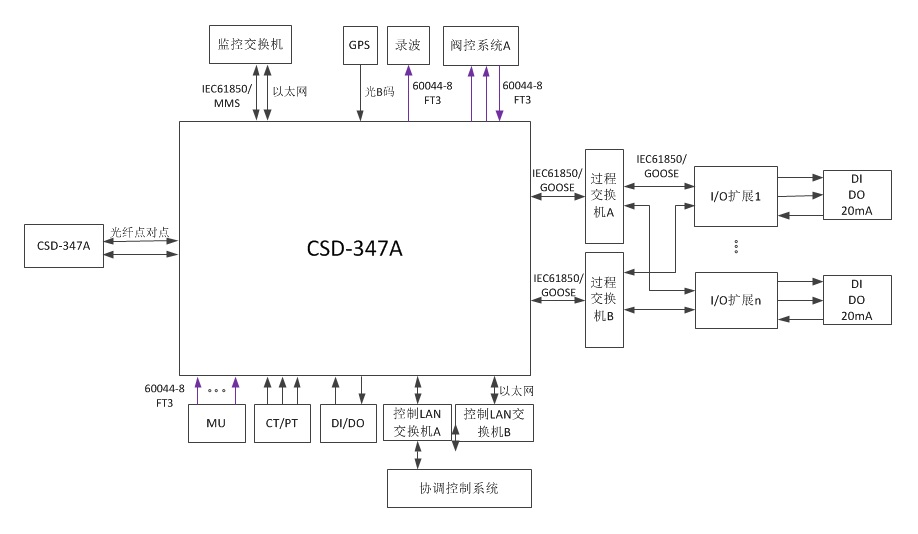
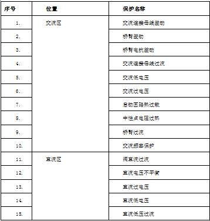

直流配网MMC型换流器的控制系统采用分层控制，主要包含站级控制层、换流器级控制层、阀级控制层以及单元级控制层
CSD-347A装置集成了换流器级控制和保护功能于一体，在提高系统方案经济性的同时，通过冗余化配置也保证了系统可靠性。

图1 CSD-347A现场安装图
CSD-347A通过选配不同插件，可配置丰富的外部接口，实现与阀控系统、对时系统、协调控制系统、集中录波仪、模拟量采集合并单元、对时系统等外部装置进行信息交互。接口示意图如图2所示。

图 2 CSD-347A外部接口示意图
表格 1 CSD-347A保护元件列表
